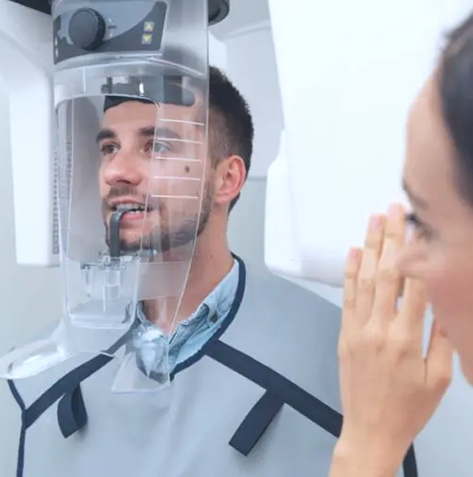
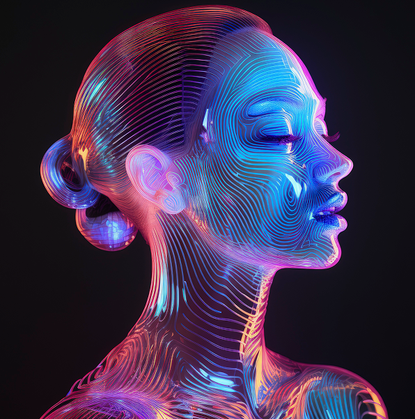
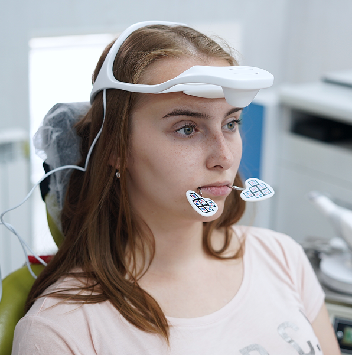

Мы предлагаем весь спектр исследований — от рентгенографии до функционального и цифрового анализа — чтобы ваш врач имел в распоряжении данные высочайшего качества для чётких клинических решений.
Наши исследования
Рентгенологическая
диагностика
Конусно-лучевая томография
Трёхмерная визуализация анатомии в высоком разрешении.
Позволяет точно оценить костную ткань, каналы, ВНЧС и анатомические особенности в формате DICOM и STL.
Применяется в имплантации, хирургии, ортопедии, ортодонтии и гнатологии.
Исследование проводится на матрице 20×20 — полный охват челюстно-лицевой зоны.

Ортопантомограмма
Телерентгенография
Цефалометрия
Цифровая
диагностика
Face Hunter
Создание цифрового 3D-профиля пациента.
Необходимо для эстетического анализа, планирования протезирования и ортодонтии с учётом внешности.
Данные Face Hunter интегрируются с внутриротовыми сканами и КТ, создавая полную цифровую модель пациента.

Интраоральное сканирование
Сканирование с маркерами
Фотопротокол
Функциональная
диагностика
Аксиография
Точный анализ движений нижней челюсти — амплитуда и вектор движений.
Неинвазивное исследование даёт врачу точную картину функционального состояния ВНЧС.
Ключевой этап при планировании тотального протезирования и сплинт-терапии.

Кондилография
Миография
ТЭНС
Исследование на комплексе Habilect
Готовые решения для врачей всех стоматологических направлений
Остались вопросы
или нужна консультация
специалиста?
Свяжитесь с нами
по телефону 8 800 200 99 11